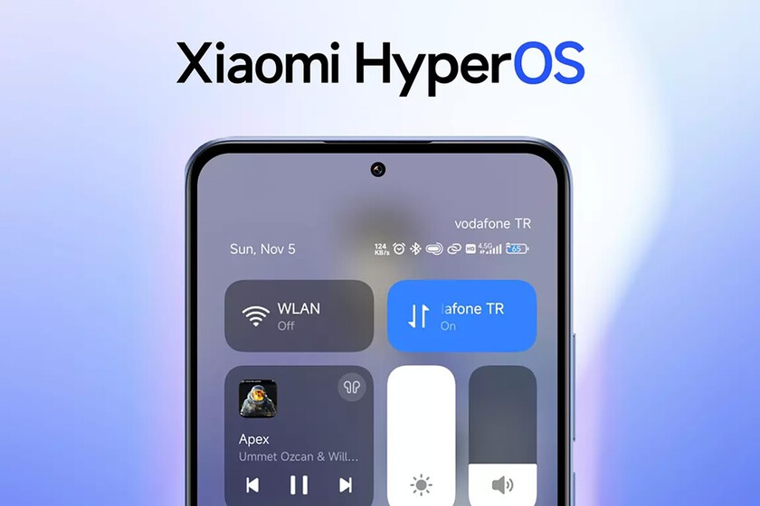

HyperOS: função popular entre usuários é retirada do sistema operacional da Xiaomi
HyperOS, novo sistema operacional da Xiaomi, promete melhorias, correção de bugs e deve ser disponibilizado na linha de celulares Xiaomi 14
 NOME AUTOR
NOME AUTOR 30 fev 2024TECNOLOGIA
30 fev 2024TECNOLOGIA
O HyperOS perdeu o suporte para a reprodução de vídeos em segundo plano, descobriu o site GizmoChina neste domingo (11). A ferramenta permitia continuar a reprodução de conteúdo mesmo com a tela desligada em vários aplicativos, incluindo o YouTube.
A motivo da remoção deve ter relação com as políticas do Google. O recurso de reprodução de vídeos em segundo plano é exclusivo para assinantes YouTube Premium, mas a função nativa permitia que até usuários gratuitos pudessem aproveitar a funcionalidade. Para evitar complicações com a Gigante das Buscas, a Xiaomi deve ter optado por retirar a função inteira.
Segundo o GizmoChina, o recurso estava disponível desde a MIUI 12 — e a comunidade gostava bastante dele. Agora, as próximas atualizações da MIUI e do HyperOS devem aposentar a ferramenta por inteiro e não haverá meios nativos de assistir vídeos com a tela desligada.

Com a retirada da função, agora a reprodução de vídeos em segundo plano volta a ser exclusiva para assinantes YouTube Premium. Atualmente, o plano mais barato da plataforma custa R$ 24,90 por mês.
Por se tratar de uma mudança pontual, a remoção deve ser distribuída de forma gradativa e contida de forma discreta num patch de segurança. Se você for usuário da MIUI 12, MIUI 13, MIUI 14 e HyperOS, a compilação deve alcançar seu aparelho em breve.